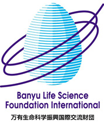

Organizers See Red But Tournament Raises Over Half a Million.
Footy Japan Charity 7's Football Tournament
Yokohama Country & Athletic Club. Monday, March 22nd 2010.
In aid of Refugees International Japan and Jeannine and Billy's Children's Foundation
Our Generous Sponsors
|
|  |
|
 |
|
|
 |
Footy Japan Charity 7's generously supported by:
GOLD SPONSORS:
Banyu Life Science Foundation International
Amway - One by One
SILVER SPONSOR:
Robert Walters
IKON Europubs
REFRESHMENT SPONSORS:
Coca Cola
PHOTO GALLERIES Gallery 1, Gallery 2
 As dawn broke, memories of hail, wind, rain and solemn faces quickly disappeared from the minds of all 2009 Charity tournament veterans. Instead, the tingly sensation we felt as a child on birthday morn as the sun poked through our curtains – confirming our hopes for a bright and sunny day to host our back yard birthday party were re-ignited within all of this year’s Charity 7’s fully grown participants. It was going to be a party alright, a fun packed football frenzy in Yamate complete with thrills, spills, skills, goals and gaffs, not to mention a small dose of controversy plus a side sprinkle of tom foolery. All in the name of 2 worthy causes, this year’s tournament beneficiaries Refugees International Japan and for the second year running – Jeannine and Billy's Children's Foundation in Cambodia. As dawn broke, memories of hail, wind, rain and solemn faces quickly disappeared from the minds of all 2009 Charity tournament veterans. Instead, the tingly sensation we felt as a child on birthday morn as the sun poked through our curtains – confirming our hopes for a bright and sunny day to host our back yard birthday party were re-ignited within all of this year’s Charity 7’s fully grown participants. It was going to be a party alright, a fun packed football frenzy in Yamate complete with thrills, spills, skills, goals and gaffs, not to mention a small dose of controversy plus a side sprinkle of tom foolery. All in the name of 2 worthy causes, this year’s tournament beneficiaries Refugees International Japan and for the second year running – Jeannine and Billy's Children's Foundation in Cambodia.

Attendees this year varied from Charity 7’s loyalists Bloomberg, PWC and Azule through to the committed TML lynchpins of Robert Walters Clash, Kanto Celts, Swiss Kickers, event hosts YCAC, BFC and Hibernian. TML newbie’s IFG Pumas made their Charity 7’s debut along with Imperio FC and the spritely Sarugaku FC. Our physically tough and enthusiastic friends from Yokota once again joined along with the skillful Intertane side captained by TML Lions/Celts 2nds managers and administrators Mo and Hussein. Hell Cats once again made a welcomed appearance after their absence from the New Year tournament and last but not least, this year’s champions YCAC ‘X’.
On paper, teams were looking comparable to one another, by no means were there any sure fire favorites and with most of the TML teams missing key players from their 11 man line up – even the group stage progression would have been a tough call for the bookies.

The day kicked off with the group A teams in action first, most notably with the tournament debutants Sarugaku FC squeezing past Robert Walters Clash with a narrow 3 – 2 victory. Controversy sparked the match into life after a disputed penalty against the Clash – photographic evidence proved otherwise and the resultant spot kick was coolly converted past Spiderman Sanders in goal. No chalked penalty spots for you to swipe at today young Fernando! The Clash were able to make amends in their next matches with 2 clinical victories to seal their place in the top 2, job done. Clinical Clash, implicit Imperio – Dancing the Salsa requires the ability to twist and turn with rhythm and speed, the performer needs a certain charm to woe his partner into his arms and then the impeccable timing to execute his secret maneuver at just the right moment.
 One touch two touch, step to the right and a turn were the hall marks among the Imperio boys as they skipped past Bloomberg with a thumping 5 -1 victory – Speedy Marco Gonzales up front forever tempting his defender with a rose in his mouth only to banish him with a terrifying change of speed, a thunderous shot and a stranded keeper. Sarugaku halted their march with a 2 – 2 draw and the flamboyancy wasn’t enough to out do the organization of the Clash. The group concluded with Sarugaku taking the top spot with the extra goal point, Clash slotting into 2nd but confident of a knockout stage second wind. One touch two touch, step to the right and a turn were the hall marks among the Imperio boys as they skipped past Bloomberg with a thumping 5 -1 victory – Speedy Marco Gonzales up front forever tempting his defender with a rose in his mouth only to banish him with a terrifying change of speed, a thunderous shot and a stranded keeper. Sarugaku halted their march with a 2 – 2 draw and the flamboyancy wasn’t enough to out do the organization of the Clash. The group concluded with Sarugaku taking the top spot with the extra goal point, Clash slotting into 2nd but confident of a knockout stage second wind.
Group B entertained a mixture of tenacity, forcefulness and subtle skill – a group dominated by a passion to win. The Swiss took the bull by the horns and showed early signs of potential tournament winners, rumors circulating about their early form were causing a panic.
 Goals galore followed their every footstep, a 5 – 0 Yokota destruction followed by a closer encounter with the Celts paved the way for a devastating climax against Intertane. 7 goals to 1 and the top spot wrapped up. Whispers infiltrated the opposing groups, one such captain even giving his deck chair up to scope their ascent. ‘Fear not’ was his assessment, ‘nobody ever remembered a winter blossom only to fall in the spring did they?’ In the meantime, the dangerous Intertane dispatched the Celts with an impressive 6 – 0 win in a group which was beginning to yield more goals than glamour. Yokota were finding things tough and were unable to move out of first gear with losses in all 3 games, their foot of the table encounter with Celts not living up to the bill and ending with a comprehensive victory to the Celts. 4 – 1. Swiss steam rolling to top spot with Intertane picking up 2nd. Goals galore followed their every footstep, a 5 – 0 Yokota destruction followed by a closer encounter with the Celts paved the way for a devastating climax against Intertane. 7 goals to 1 and the top spot wrapped up. Whispers infiltrated the opposing groups, one such captain even giving his deck chair up to scope their ascent. ‘Fear not’ was his assessment, ‘nobody ever remembered a winter blossom only to fall in the spring did they?’ In the meantime, the dangerous Intertane dispatched the Celts with an impressive 6 – 0 win in a group which was beginning to yield more goals than glamour. Yokota were finding things tough and were unable to move out of first gear with losses in all 3 games, their foot of the table encounter with Celts not living up to the bill and ending with a comprehensive victory to the Celts. 4 – 1. Swiss steam rolling to top spot with Intertane picking up 2nd.
 So onto Group C – a mixed bag, a pick a mix - a Pandora’s box? Basically, difficult to predict what to expect from any of the teams. The Hell Cats have been inconsistent, sometimes brilliant, sometimes not so brilliant – Azule, past champions but again, difficult to predict their strength on the day. PWC, ever enthusiastic and happy to join the event, hints of tournament champions over the years but would have to maintain their group form going into the knock out stages. YCAC ‘X’ – big, loud, ‘up for it’ – ready to ‘ave it big time’! Donning a beautifully pristine England kit, were a team finely selected by YCAC first team player Anthony Savage. It would be a fascinating affair. The opening exchanges raised eyebrows with Hellcats looking a serious threat by tucking 4 past Azule without any fuss, across the plains, ‘X’ mounted their campaign forcefully by sweeping the committed yet overwhelmed PWC 5 – 2. So onto Group C – a mixed bag, a pick a mix - a Pandora’s box? Basically, difficult to predict what to expect from any of the teams. The Hell Cats have been inconsistent, sometimes brilliant, sometimes not so brilliant – Azule, past champions but again, difficult to predict their strength on the day. PWC, ever enthusiastic and happy to join the event, hints of tournament champions over the years but would have to maintain their group form going into the knock out stages. YCAC ‘X’ – big, loud, ‘up for it’ – ready to ‘ave it big time’! Donning a beautifully pristine England kit, were a team finely selected by YCAC first team player Anthony Savage. It would be a fascinating affair. The opening exchanges raised eyebrows with Hellcats looking a serious threat by tucking 4 past Azule without any fuss, across the plains, ‘X’ mounted their campaign forcefully by sweeping the committed yet overwhelmed PWC 5 – 2.
 HellCats’ progress was halted as PWC recovered from their first match battering to hold them 1 – 1. Unaffected, they entered the group match of death against YCAC ‘X’ with purpose, dominating the opening minutes. End to end football ensued, the northern European style of the ‘X’ utilizing the target man, playing to feet compared to the close control, balance and movement of the HellCats was an intriguing spectacle. The final score, 2 – 2; the deserved result. So with Azule disappointed not to muster a point and PWC failing to impose themselves, the door was left wide open for YCAC ‘X’ and HellCats to try their hand against the big boys of A, B and D. HellCats’ progress was halted as PWC recovered from their first match battering to hold them 1 – 1. Unaffected, they entered the group match of death against YCAC ‘X’ with purpose, dominating the opening minutes. End to end football ensued, the northern European style of the ‘X’ utilizing the target man, playing to feet compared to the close control, balance and movement of the HellCats was an intriguing spectacle. The final score, 2 – 2; the deserved result. So with Azule disappointed not to muster a point and PWC failing to impose themselves, the door was left wide open for YCAC ‘X’ and HellCats to try their hand against the big boys of A, B and D.
Initial reactions to the group D draw varied from dismay (Pumas) to suspicion (Hibs, YCAC) to indifference (BFC).
 A top heavy mix leaving IFG Pumas feeling a little uneasy. The reality crushed all feelings of inferiority as all teams showed signs of pushing through as group winners, maybe not by initial results, but by periods of superiority over their rivals. YCAC, who started the day with 6 men, went into the first match against a team in similar circumstances – both teams unfamiliar with one another. It was YCAC who set the pace and with an eager M Taw covering all corners, Pumas were not able to provide an answer succumbing to a 3 – 0 loss. Hibs were in similar straits with personnel failing to meet the early kick off time of 11:50, lack of numbers helped BFC hammer their TML rivals 4 – 1. It also threw up the talking point of the day, as tournament organizer, Sid, who'd been roped in by his coaches to help Hibs out as goalie, received the only red card of the day. A top heavy mix leaving IFG Pumas feeling a little uneasy. The reality crushed all feelings of inferiority as all teams showed signs of pushing through as group winners, maybe not by initial results, but by periods of superiority over their rivals. YCAC, who started the day with 6 men, went into the first match against a team in similar circumstances – both teams unfamiliar with one another. It was YCAC who set the pace and with an eager M Taw covering all corners, Pumas were not able to provide an answer succumbing to a 3 – 0 loss. Hibs were in similar straits with personnel failing to meet the early kick off time of 11:50, lack of numbers helped BFC hammer their TML rivals 4 – 1. It also threw up the talking point of the day, as tournament organizer, Sid, who'd been roped in by his coaches to help Hibs out as goalie, received the only red card of the day.
 At 1 each, BFC broke through with young Hamish Denham powering through on goal, Sid slid out and smothered the ball only to realize he'd gone 5 yards outside the box to do so. With a sly grin, Vladimir showed him the card as he sheepishly left the field with a smirk on his face - something for all the players to rag him about all day. YCAC were to dominate this group, M Taw pivotal with BFC 4 points behind in 2nd place. At 1 each, BFC broke through with young Hamish Denham powering through on goal, Sid slid out and smothered the ball only to realize he'd gone 5 yards outside the box to do so. With a sly grin, Vladimir showed him the card as he sheepishly left the field with a smirk on his face - something for all the players to rag him about all day. YCAC were to dominate this group, M Taw pivotal with BFC 4 points behind in 2nd place.
Not only did we see teams making their FJ tournament debuts this year, matches running ahead of schedule made a first appearance and with the sun shining, breezeway bar bustling and time to reflect on the mornings events a tournament photo including players, spectators and officials was taken. Many thanks to those who delayed their hot dog for this!

The knockout rounds can be exciting but it also means the end of the days play for a substantial number. Stakes are high and the pressure felt by a desire to stay in can be seen as each match moves into the final minutes. The cautious score lines among the plate quarters were testament to this with Imperio and PWC the only teams to hit 3. A nervy encounter between Celts and Bloomberg culminated in a 4 – 3 penalty win for Celts, with Hibs, PWC and Imperio progressing. The cup mirrored the plate atmosphere apart from Swiss and Intertane, initial group rivals, who both put 4 past their respective rivals moving comfortably through to the semis. YCAC ‘X’ and hosts YCAC also swept their opponents aside to move forward..
 Semi final time with both Plate and Cup matches dominated by penalty kicks to break the tense deadlock. YCAC X broke the hearts of the Intertane team in the cup, whilst Imperio had to bang in 5 to see out PWC. Semi final time with both Plate and Cup matches dominated by penalty kicks to break the tense deadlock. YCAC X broke the hearts of the Intertane team in the cup, whilst Imperio had to bang in 5 to see out PWC.
A last minute equalizer in the Swiss YCAC semi affair after Swiss had taken an early lead led to yet another penalty decider. It couldn’t have been written, player of the tournament contender J Lagerback had to convert his penalty for the Swiss to stay in, alas, it wasn’t to be. A wayward strike to the top left hand corner of the YCAC perimeter fence left the keeper stranded and YCAC were through to the finals to meet their club counter parts in the final.
 So it was Hibernian, rising from the depths of their initial defeat at the hands of BFC earlier in the day, who took to the field against Imperio. An influx of players rising from their beds, gradually bulking up their strike force throughout the day paid dividends and so the spirited Hibs men were crowned Plate Champions 2010. The cup final was to be an interesting encounter between YCAC club companions. All pleasantries were shelved and it was to the business of re-claiming the trophy after a defeat at the hands of Footy Japan the year before. The fact that either side winning the match meant the trophy coming to YCAC was beside the point, there was pride at stake and with YCAC fielding a number of new members, unaware of any camaraderie between the 2 teams – a competitive battle was certainly on the cards. So it was Hibernian, rising from the depths of their initial defeat at the hands of BFC earlier in the day, who took to the field against Imperio. An influx of players rising from their beds, gradually bulking up their strike force throughout the day paid dividends and so the spirited Hibs men were crowned Plate Champions 2010. The cup final was to be an interesting encounter between YCAC club companions. All pleasantries were shelved and it was to the business of re-claiming the trophy after a defeat at the hands of Footy Japan the year before. The fact that either side winning the match meant the trophy coming to YCAC was beside the point, there was pride at stake and with YCAC fielding a number of new members, unaware of any camaraderie between the 2 teams – a competitive battle was certainly on the cards.

YCAC started the match on top, a faster pace was set and it wasn’t long before they were 1 up. The ‘X’ boys, never a team to give up, took the game back and it was YCAC who had to adapt to their style and defend for a good proportion of the match. Threaded passes into the feet of the YCAC X forward, gentle lay offs to advancing midfielders – classic Arsenal mid 90’s Jon Hartson, Ian Dowey Southampton early 90’s plus a hint of E Heskey with modern day Villa – gradually broke the spirit of the YCAC team and the equalizer was converted. The match progressed into extra time Golden goal and it was YCAC X who claimed the glory with a simple tap in past the stranded Kouka in goal. YCAC ‘X’ – Champions 2010.

FJ would like to once again thank all those who participated in the day and truly hope the day’s football was as enjoyable as it was for the organizers.  The day lived up to expectations in terms of commitment, attitude, fair play and conduct by all personnel - not to mention a flurry of goals throughout the morning period! A special mention must also go to the referees who did a sterling job. Thanks gents! YCAC once again played wonderful hosts with their magical futuristic turf and facilities but the most important achievement of the day was the amount raised for both beneficiaries; Refugees International Japan and Jeannine and Billy's Children's Foundation. Your participation will contribute to projects expanding the globe, positively affecting the lives of many. For more information about this year’s beneficiaries, please visit their websites above. The day lived up to expectations in terms of commitment, attitude, fair play and conduct by all personnel - not to mention a flurry of goals throughout the morning period! A special mention must also go to the referees who did a sterling job. Thanks gents! YCAC once again played wonderful hosts with their magical futuristic turf and facilities but the most important achievement of the day was the amount raised for both beneficiaries; Refugees International Japan and Jeannine and Billy's Children's Foundation. Your participation will contribute to projects expanding the globe, positively affecting the lives of many. For more information about this year’s beneficiaries, please visit their websites above.
Looking forward to seeing you next year!
For all the results from the day: CLICK HERE
The final amount raised this year was: ¥520,000
¥260,00 will be donated to to each of the 2 charities.
Report by FJ

|